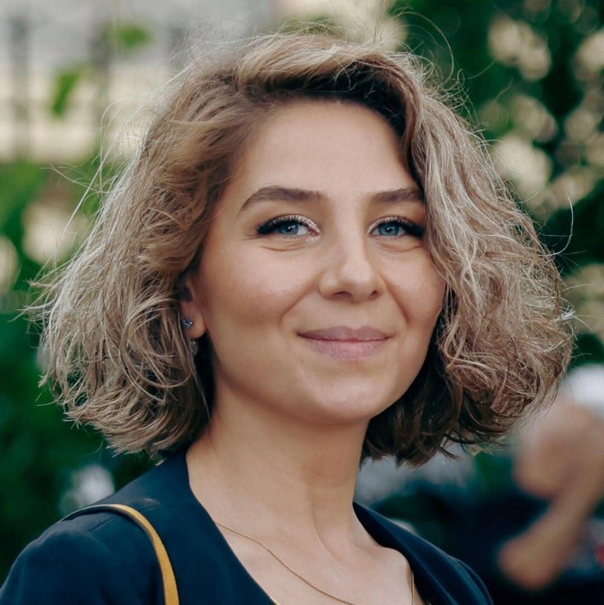

ირმა დვალიშვილი
„ფუსფუსა დედამიწის“ ხელმძღვანელიხელოვნების, ეკო-დიზაინისა და სისტემური აზროვნების პედაგოგი. ირმას მიზანია, ბავშვებმა შეისწავლონ ცოცხალი თუ არაცოცხალი სისტემების სასიცოცხლო ციკლები, მოძიებული ინფორმაციით, საკუთარი ფანტაზიითა და ბუნებრივი მასალებით რეალურ, ხელნაკეთ ნივთებად გარდაქმნან.
🌱 სასიცოცხლო ციკლები
🔄 სისტემური აზროვნება
🎨 პრაქტიკული ტექნიკები
💡 შემოქმედებითი წარმოსახვა
✋ ნატიფი მოტორიკა
🌟 თვითგამოხატვა